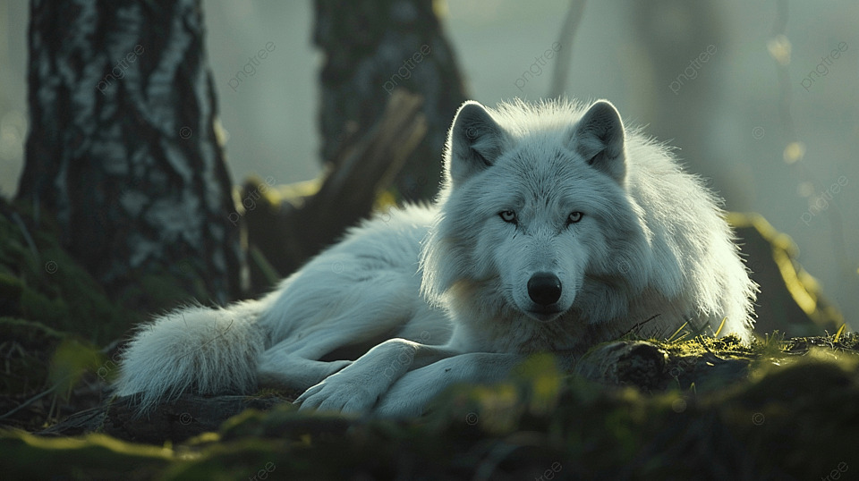

Lobo (Canis lupus)

Hábitat y Estilo de Vida
El lobo gris (Canis lupus) vive en una gran variedad de hábitats, desde la tundra ártica hasta los desiertos de Arabia. Es un animal social que vive en manadas familiares.
Características
- Son animales extremadamente sociales.
- Viven en manadas familiares.
- Los miembros de la manada crían crías de forma cooperativa.
- Defienden el territorio.
- Recorren grandes distancias, llegando incluso a cubrir 19 kilómetros en un solo día.
Volver Inicio